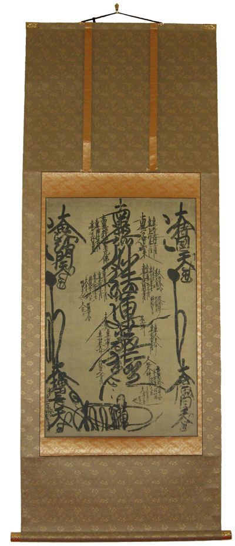

The main object of veneration (Honzon) of the Las Vegas Temple is of the Two Buddhas (Shakyamuni Buddha & Taho Buddha) and One Stupa style. It is a physical representation of the Omandala Gohonzon shown below. There are also Omandala Gohonzon on either side of the main Altar.

Omandala Gohonzon
" The object of veneration (Honzon) at the scene of this transmission of Namu Myoho Renge Kyo from the Eternal Buddha to his original disciples is suspended in the sky above the Eternal Buddha Sakyamuni's Saha-world. This is a stupa of treasures, in which Buddhas Sakyamuni and Taho sit to the left and right of Myoho Renge Kyo. They are assisted by four bodhisattvas such as Jogyo representing the original disciples of the Eternal Buddha called out from underground. Four more bodhisattvas, including Manjusri and Maitreya, take lower seats as followers. Other great and minor bodhisattvas resemble numerous people sitting on the ground and looking up at court nobles. They are those converted by the Buddha in the theoretical section and those who came from other lands. On the ground also, in praise of the Buddha's preaching, are the Buddhas in manifestation. Gathered together from all the worlds in the universe, they represent the provisional Buddhas of their respective lands.
The true object of veneration (honzon) such as this was not revealed anywhere else by Sakyamuni Buddha during more than fifty years of his preaching in this life. Though he spent eight years preaching the Lotus Sutra, the scene was limited to the preaching in the sky above mount Sacred Eagle recounted in eight chapters, from the fifteenth to the twenty second chapters. During two millenniums after the death of Sakyamuni Buddha, the age of the True Dharma and the Imitative Dharma, some venerated Sakyamuni Buddha accompanied by Kasyapa and Ananda as descrbed in the Hinayana sutras; others venerated him accompanied by such bodhisattvas as Manjusri and Samantabhadra as he appeared in quasi-Mahayana sutras, the Nirvana Sutra, or the theoretical section of the Lotus Sutra. Many wooden statues and portraits were made of Sakyamuni Buddha as he preached Hinayana or quasi-Mahayana sutras, but statues and portraits of the Eternal Sakyamuni Buddha revealed in 'the Duration of the Life of the Thatagata' chapter of the Lotus Sutra were never made. Now in the beginning of Mappo (declining latter age of the Dharma), is it now the time that such statues and portraits are made?"
Kanjin Honzon Sho
Nichrien Shonin
The above image has hot spots for explinations; click the image for links which will open in new windows.
Dedication written on the back of the Las Vegas Honzon
Founder: Rev. Nichiji Kaisen Kanai
Starter: Rev. Nichiri Shokai Kanai
The picture shows what is written on the back of the Gohonzon of the Kannon Temple of Nevada.
The founder was Rev. Shokai Kanai’s father. After his father’s death in 1988, Rev. Shokai Kanai returned to Japan in order to succeed his father’s extension temple in Tokyo and took care of his father’s followers during the next six years. Nichiren Shu Shumuin requested him to revitalize the Los Angeles Nichiren Buddhist Temple since he had been an assistant minister at the temple from 1964 to 70 and knew many members of the temple. So he closed his father’s extension temple and moved to Los Angeles in 1994 and worked to build up members there till October 2007.
While he was a head priest of the L.A. temple, he bought a house in northern Las Vegas and enshrined this Mandala Gohonzon and placed a set of altar ornaments that used to be at his father’s temple in Tokyo in commemoration of his father’s Seventeenth Memorial Anniversary on November 29, 2002. Since Rev. Shokai Kanai lived in Los Angeles at that time, his son, Rev. Douglas Shoda Kanai took care of it during his time at graduate school at University of Nevada at Las Vegas.
Because Nichiren on his death bed asked to hang this original Gohonzon, Nichiren Shu recognizes it as the official Gohonzon of the sect among the 128 still existing ones. This symbolizes harmony of the worlds in the ten realms.